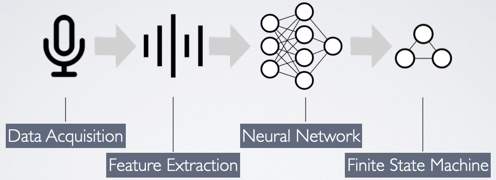
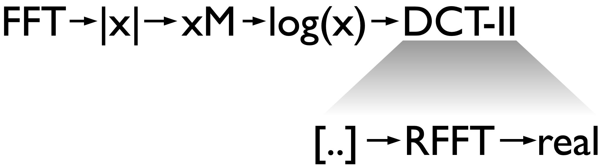

Posted on 27 May 2020 By Noah Hütter
In my first project on the topic of Machine Learning I implemented a simple keyword spotting algorithm on a Microcontroller. In this post I will walk you through the steps of implementing and testing feature extraction and a neural network on a MCU!
Download pre-processed audio data, train the model, implement it and compile the MCU code.
# clone and setup
git clone https://github.com/noah95/edison
cd edison
source bootstrap.sh
# fetch training data and pre-trained model
curl -L https://github.com/noah95/edison/releases/download/v2.0.0-RC1/keywords-8-noah.tar.gz | tar xvz
curl -L https://github.com/noah95/edison/releases/download/v2.0.0-RC1/kws_model.h5 -o cache/kws_keras/kws_model.h5
# train model
./main.py train keras train
cp cache/kws_keras/kws_model.h5 ../firmware/src/ai/cube/kws/kws_model.h5
# import net to firmware folder
cd ../firmware/
make import-cubeai-net
# build MCU code
make -j8
# Flash board
make flash
To start experimenting with keyword spotting, clone my repository
git clone https://github.com/noah95/edison
cd edison
and setup the python virtual environment. This script initializes required submodules, sets up the environment including paths and packages.
source bootstrap.sh
To recreate the graphs in this writeup, fetch my training data and a pretrained model.
cd audio
curl -L https://github.com/noah95/edison/releases/download/v2.0.0-RC1/keywords-8-noah.tar.gz | tar xvz
curl -L https://github.com/noah95/edison/releases/download/v2.0.0-RC1/kws_model.h5 -o cache/kws_keras/kws_model.h5
For the microcontroller code you need the STM32CubeMX initialization code generator
with the X-CUBE-AI extension that can be installed from within CubeMX. Furthermore a arm-none-eabi toolchain is required. During the
course of this project the following version was used:
arm-none-eabi-gcc (GNU Tools for Arm Embedded Processors 8-2018-q4-major) 8.2.1 20181213 (release) [gcc-8-branch revision 267074]
The code was run on a B-L475E-IOT01A STM32L4 Discovery kit IoT node with WS2811 LEDs for indication. With some modifications the code can be ported to any STM32L4 based platform with onboard PDM MEMS microphones.
Now you are good to go!
The pipeline of audio processing includes data acquisition, feature extraction, the neural network and a small state machine for processing the networks predictions. I won’t go into detail of data acquisition, so we start at the feature extraction which is done by means of Mel frequency cepstral coefficients. A subset of these coefficients is then fed into a convolutional neural network which is trained to predict, which keyword was spoken. The state machine then decides, what action should be performed.

The raw audio data is pre-processed before fed into the neural network. This brings the advantage of
The technique applied here is called Mel frequency cepstral coefficients or MFCC for short.

To see what exactly is going on, go to the audio directory of the edison repository and launch the MFCC example.
./main.py mfcc host
Multiple plots should pop up. Close all except the one titled Own implementation. In the first graph the raw audio sample is shown with the red area indicating the current window location. The audio that is processed in chunks of 1024 samples. This chunk is first transformed to the frequency domain using FFT and the magnitude is kept. This is shown in the graph at the bottom left. We then map these powers to the Mel scale using triangular overlapping windows. This is the step where the transformation to the logarithmic perception of human hearing is done. Notice the overlapping triangles in the top right graph?
Each triangle contains a band of frequencies. The lower frequencies are resolved in greater detail (smaller distance between triangle tips), similar to our hearing that is more sensitive to changes in frequencies in the lower end of the spectrum. The log of these values is then transformed with a discrete cosine transform. This is the compression step mentioned earlier. The DCT is used in almost all digital media such as JPG, MPEG, MP3 and so forth to compress digital signals. The use of cosine functions as base functions allows for fewer coefficients to be required to approximate the signal. Or put differently: The DCT compresses the most relevant information of the input signal in its lower output coefficients. We can now take, say 13, of the lowest coefficients and set the others to zero and have a good approximation of our input.
We now have the coefficients of a frame of 1024 samples, which corresponds to 64ms when sampling at 16kHz. If we take a keyword, say “Edison”, it can be up to one second long. This is why this process is repeated for the length of the network input. Issue the following command to gain some insight on how these coefficients look for different keywords:
./main.py train keras plot
The colormaps of the coefficients would make great art! Speaking of art, couldn’t we train a network to recognize keywords in these images? And this is where the neural network comes in.
This is where unknown territory begins for me. Various network topologies from different sources are compared in the following table. They differ in complexity, number of parameters and, what is most important for this project, execution time and memory usage.
[1] https://github.com/tensorflow/tensorflow/blob/master/tensorflow/examples/speech_commands/models.py [2] https://github.com/majianjia/nnom/tree/master/examples/keyword_spotting
The model currently implemented in Edison is the one shown below. With the acquired data it takes only a few minutes to train. If you have any suggestions on other network topologies, I am open for comments and suggestions.
Something special about this application is the temporal dependence of the input data, meaning that one frame of coefficients is dependent on the previous but not on the next. This could be exploited by using a temporal convolutional network for example. In my case, I augmented the data in a way that they are replicated multiple times at the net input during training. As can be seen in the following figure, most recordings are shorter than the defined network input (31 frames of 64ms each, resulting in a 2 second window). To get more confident predictions and also to counteract overfitting, each recording is shifted temporally and padded with zeros. With the Edison key word, this makes for 20 variations to train on.
First real world testing (meaning with onboard microphone and my voice), the network output (the predictions) were very noisy. I tried to find a suitable threshold where a word can be considered detected but even with high thresholds, some predictions were unusable. To cope with this, a moving average filter on the net output was introduced. It simply averages the last value with the new net output to get a smoothened trace. This might be a bit hacky but worked out for this purpose.
$$\text{pred}[i+1] = \alpha\cdot \text{pred}[i] + (1-\alpha)\cdot \text{netout}$$
So much about the theory, let’s see how you can acquire you own voice commands and train a keyword spotting model.
My network was trained on about one hour of recordings. This sounds like much to record but with the simple script the hour will pass in no time.
Adjust the output directory in config.py and start the fun by running.
./main.py acquire acq
Push the enter key without entering a number and speak the last word and the program will randomly ask you for keywords.
If you reach about 80 samples per keyword, you can proceed with the next step.
The raw audio samples are pre-processed, augmented as described earlier and stored at cache/kws_keras/*.npy. You can download my pre-processed samples from a GitHub release if you don’t want to record your own.
Training is as simple as running the following command.
./main.py train keras train
In the file edison/train/kws_keras.py you can choose between the different models, adapt hyper parameters and much more. To get a sense on how accurate the model is, run
./main.py train keras test
and you see in my case a 99.81% accuracy on test data that has never been used during the training process.
Neural network inference on the microcontroller is done using the X-CUBE-AI libraries by ST. They are not open source and the CubeMX tool has to be opened to convert the model which is a painstaking. BUT it worked very good for me during this project for highly accurate results with floating point accuracy. It is perfect for prototyping imo, but with the next project I will certainly look into other frameworks.
End of rant. Open the CubeMX tool and load the project under firmware/CubeMX/edison.ioc. In the left pane, select X-CUBE-AI where you can find the kws network.
Browse for the model .h5 file and hit the analyse button. The statistics show memory usage and operation cycle count. We need the code so click
GENERATE CODE and wait for it to complete.
To import the sources into the firmware directory, launch make with the argument import-cubeai-net. This will copy the generated sources and libraries.
make import-cubeai-net
CubeAI has a built in verify on target function. Compile the firmware with
make clean && make -j16 OPMODE=CUBE_VERIFICATION flash
and the implemented model can be verified in CubeMX giving some insights on runtime and accuracy.
The final step is to compile for actual application mode and flash to target.
make clean && make -j16 flash
The most effort in this project went into implementing the feature extraction, namely the MFCC calculation and the data acquisition on the board. After the neural network performed well on the host the implementation with CubeMX was simple. Various other frameworks were looked into, such as NNoM and NEMO with a manual network implementation with CMSIS-NN API. The time ran out however to get these to work. Especially quantized networks would be interesting to benchmark since the network is performing outstandingly well.
I can think of numerous other studies that could be performed based on this work:
Also architectural changes could be explored:
Some aspects were already looked into, such as a TCN (see the tcn branch), model quantization and implementation in CMSIS (cmsis-nn branch),
NNoM (see master branch with ./main.py kws nnom) and source code under src/ai/nnom. If you find the time to look into one of them
or have any other work building on this project, I would be very excited to hearing from it.
{kind=link}
{kind=link}
{kind=link}
{kind=link}
{kind=link}
{kind=link}
{kind=link}
{kind=link}
{kind=link}